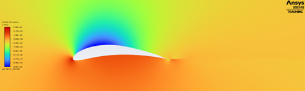
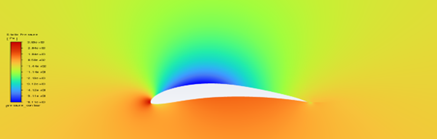
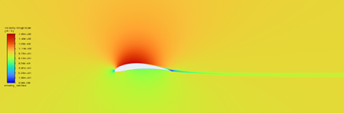
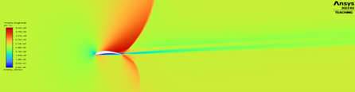
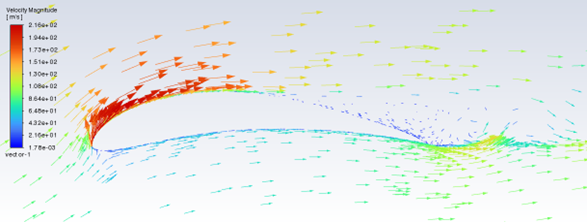
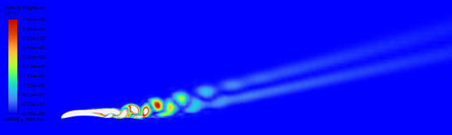
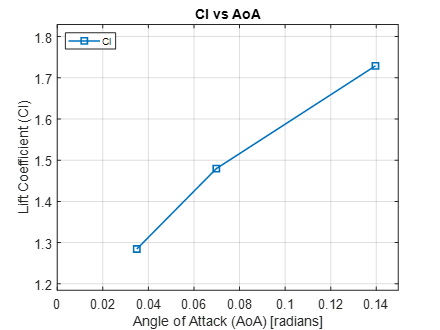
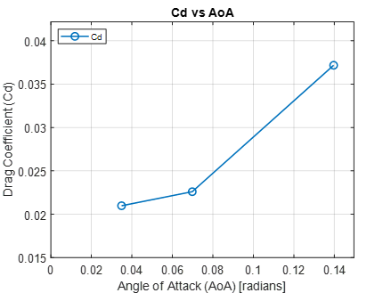

University of British Columbia

Summary
This project used ANSYS Fluent to analyze turbulent flow around a 2D Eppler E423 airfoil. The study compared subsonic, transonic, and high angle of attack (AoA) cases to evaluate lift, drag, flow separation, shock-related effects, and wake behaviour.
What?
Evaluated the aerodynamic behaviour of a 2D E423 airfoil by comparing lift, drag, and flow-field patterns across multiple angles of attack and Mach numbers.
How?
Built steady and transient CFD cases in ANSYS Fluent using a density-based solver and the k–ω SST turbulence model. Simulations included Mach 0.3 cases at 2°, 4°, 8°, and 15° angle of attack, plus a transonic Mach 0.9 case at 4° AoA.
Results
The Mach 0.3 cases showed increasing lift with angle of attack and mostly attached flow from AoA of 2° to 8°. The Mach 0.9 case showed shock-related pressure and velocity changes, while the 15° case captured separated flow, wake shedding, and unsteady lift and drag behaviour.

At low AoA, the pressure field shows a low pressure (blue) suction region over the upper surface and a higher pressure field (red) below the airfoil. This supports attached, lift-producing flow in the pre-stall regime.

The velocity contour shows acceleration over the upper surface and a thin wake downstream. The mostly attached flow is consistent with low drag at the lower angle subsonic cases.

The transonic case shows strong acceleration over the upper surface followed by a sharp velocity change and wake growth. This indicates compressibility effects, shock-related behaviour, and increased drag.

At high angle of attack, the velocity vectors show separated flow over the upper surface and swirling flow behind the airfoil. This helps explain the unsteady lift and drag behaviour.

The vorticity plot shows repeating wake structures convecting downstream from the airfoil. These structures are consistent with vortex shedding and the oscillating force coefficients observed in the transient case.

